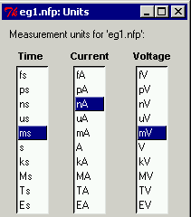

|

A NEUROFIT project carries a set of units for the fundamental
dimensions
and all display and computation is performed with these units.
The project
units can be changed (thus scaling the affected data and parameter values)
by selecting "Measurement Units..." from the
Data Menu.
Note that scaling the voltage will also affect the names of the time
constant parameters.
The conductance parameters will be adjusted appropriately whenever the
voltage or current units are changed.
If you have opened a new project, the project units will initially be undefined. If they are not defined by specifying them as described above, then the units for the first file read in will be used as the project units. |
The data in each file also carries (explicitly for abf files,
implicitly for text files) a set of units for the fundamental
dimensions of time, current and voltage.
Data for each file is scaled to the project units before displaying
and computation.
If a file is
an |